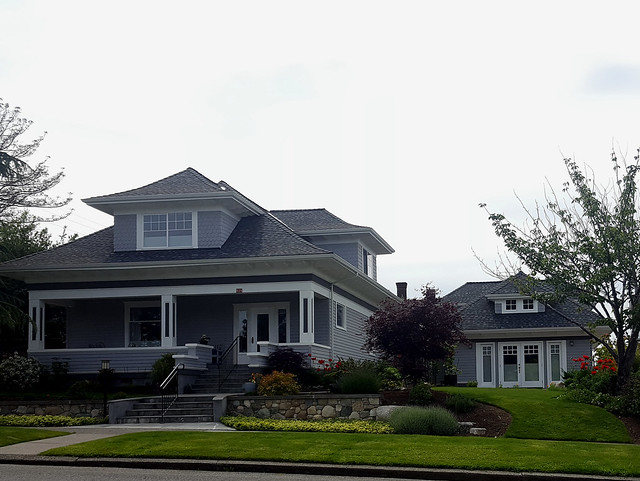
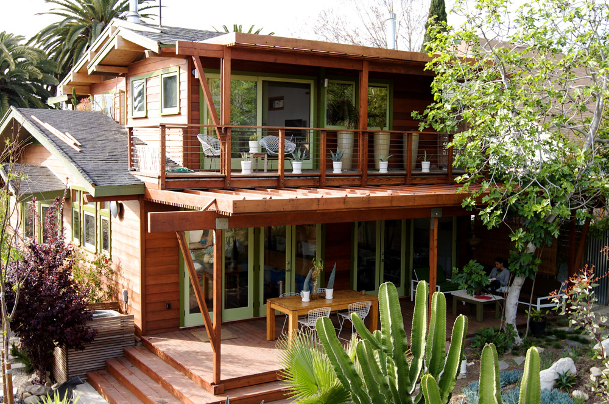

← Back to Projects
Garage To Income Suite
Project type: Garage conversion ADU

Before: detached structure with low functional value.

After: rental-ready cottage with clean modern curb appeal.
Result: private entry path and improved overall lot value.